Lineare Funktionen - Aufgaben 1
1.
Berechne die Funktionsgleichung der Geraden f, die durch die Punkte A(–2|5,5) und B(4|1) geht.
2.
Berechne die Funktionsgleichung der Geraden g, die durch den Punkt P(3|–1) geht und zur Geraden f[ A(2|7), B(5|–2) ] parallel ist.
3.
Berechne die Funktionsgleichung der Geraden g, die durch den Punkt P(–2|1) geht und normal auf die Gerade f[ A(–3|4), B(1|2) ] steht.
4.
Entscheide durch Rechnung, ob die Punkte A(–5|9), B(2,5|3), C(7|–0,5) auf einer Geraden liegen.
5.
Berechne die Nullstelle der Geraden f[ A(0,5|–3), B(5|2) ], also den Punkt, wo sie die x-Achse schneidet.
6.
Berechne den Schnittpunkt der Geraden f[ A(–2|–6), B(3|0) ] und g[ C(1|4,4), D(5,8|2) ].
7.
Löse grafisch in  x :
x :
x :| a) |
(1) 2x – 2y ≥ 5 (2) 2x – 6y ≤ 21 (3) 4x + 6y ≤ 15 |
b) |
(1) x – 2y ≥ –9 (2) x + 4y ≥ 3 (3) 2x + 2y ≥ 3 |
c) |
(1) 4x – y ≤ 5 (2) –x + 2y ≤ 8 (3) 2x + 6y ≥ 9 (4) 3x + 2y ≤ 12 |
8.
Eine Schraubenfeder mit linearer Federkennlinie hat bei Belastung mit 9 N eine Länge von 21 cm, bei Belastung mit 15 N eine Länge von 23 cm. Wie lang ist die Feder im unbelasteten Zustand?
9.
Ein Stromversorger bietet zwei Tarife an. Bei Tarif1 beträgt der Grundpreis 50,- Euro pro Jahr und der Arbeitspreis 0,25 Euro pro kWh, bei Tarif2 sind es 130,- Euro pro Jahr und 0,20 Euro pro kWh. Ab wie viel kWh rentiert sich ein Wechsel von Tarif1 zu Tarif2?
10.
Bestimme den Absatz bei einem Preis von a) 52,90 Euro über lineare Interpolation, b) 56,50 Euro über lineare Extrapolation:
| Preis (in Euro) | 50,00 | 51,90 | 54,50 | 55,90 |
| Absatz (in Stück) | 1852 | 1815 | 1737 | 1709 |
11.
Um 17:00 Uhr werden 19,5 °C gemessen, um 18:15 Uhr 15,6 °C. Bestimme die Temperatur um 17:20 über lineare Interpolation.
Ergebnisse:
1. y = –0,75x + 4 2. y = –3x + 8 3. b) y = 2x + 5 4. nein 5. N(3,2|0) 6. S(5|2,4)

8. 18 cm 9 ab 1600 kWh 10. a) 1785 Stück b) 1697 Stück 11. 18,46 °C